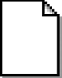
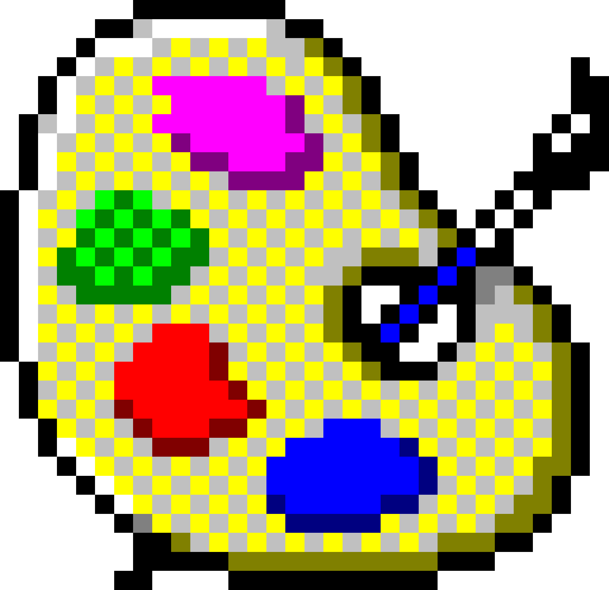
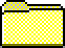
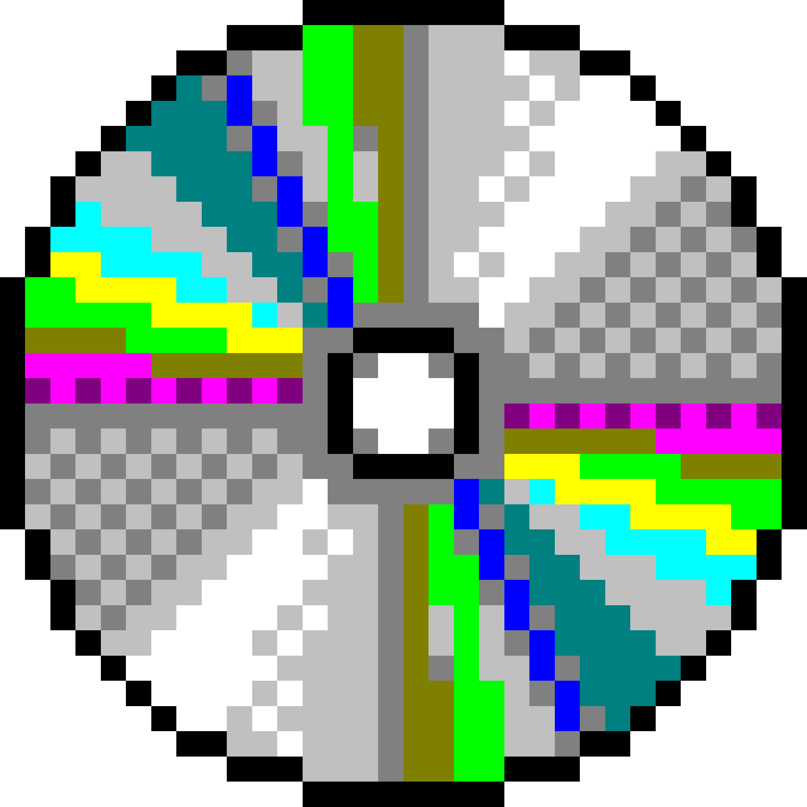
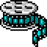
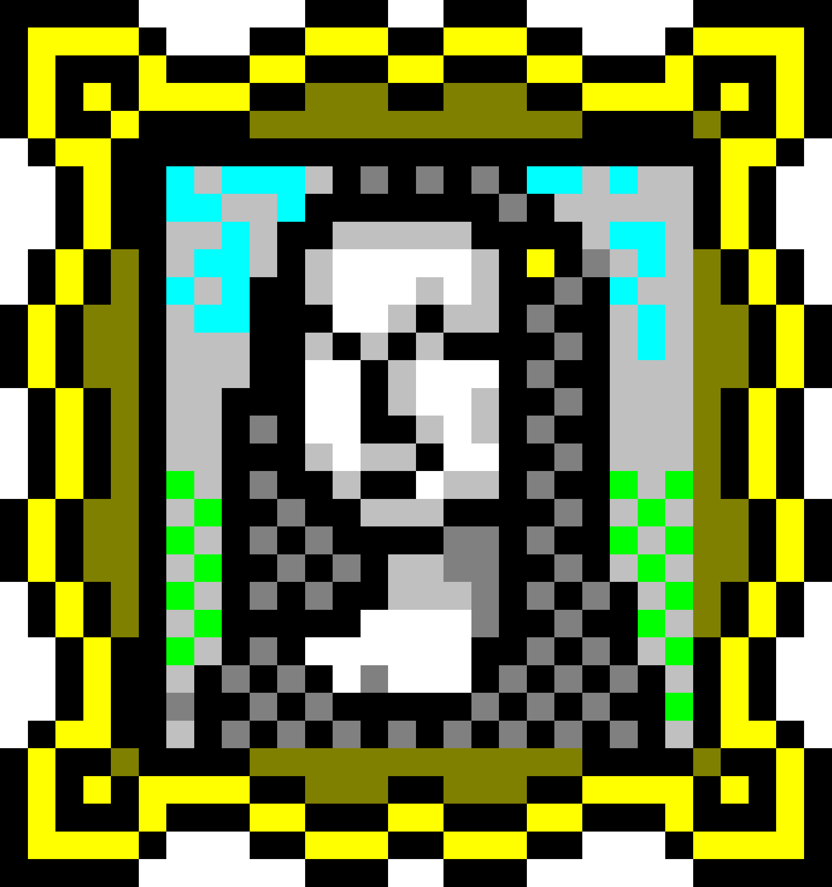
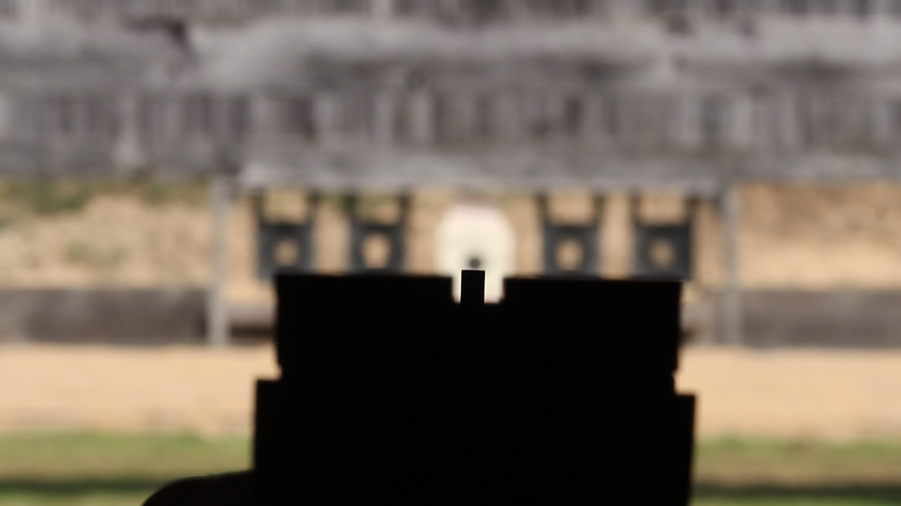

VISER — un webdoc
═══════════════════════════════════
Un autoportrait documentaire sous forme de système d'exploitation.
"Je suis fait pour l'instant. On m'apprend la durée.
Est-ce que je peux réconcilier les deux ?"
VISER explore cette contradiction centrale : l'action pure de la
performance (le tir sportif, l'instant) face à la paralysie de la
production (la création numérique, le temps long).
Le tir n'est pas le sujet. C'est la métaphore.
—
UTILISATION DU SYSTÈME
═══════════════════════════════════
Ce site fonctionne comme un bureau interactif.
• Double-cliquez sur les icônes pour lancer les programmes.
• "viser.exe" ouvre une capsule créative.
• "stand.mp3" lance l'immersion sonore.
• Explorez le dossier "viser" pour accéder aux notes et archives.
• Vous pouvez déplacer, réduire (_) ou agrandir (□) les fenêtres.
Attention : Le système peut se montrer instable en cas d'hésitation
ou d'inactivité prolongée. Gardez le contrôle.
—
CRÉDITS & REMERCIEMENTS
═══════════════════════════════════
Interviews (Son) : Justine Cerisier
Interviews (Perche) : Lucie Desheulles
Interviews (Caméra) : Melvyn Blivet
Fiction Sonore : Kylian Legeay (Prises son)
Mentorat Sonore : Ludwig Julienne-Rouxel (Mixage, compo)
Enseignements : Éric Houlière, Romain Loiseau,
Elodie Sabas, Anne-Marie Puizillout.
Logistique : IUT de Laval (Prêt du matériel).
Images d'archives : FFTIR (Extraits YouTube de ma finale).
—
PORTFOLIOS DE L'ÉQUIPE
═══════════════════════════════════
Justine Cerisier
Lucie Desheulles
Melvyn Blivet
Kylian Legeay
Ludwig Julienne-Rouxel
—
[Mandin Maxime — BUT MMI — 2026]
0:00
viser
outils
note.txt

interview.mp4
outils_01.jpg outils_02.jpg
contraintes
note.txt
interview.mp4
contraintes_01.png
contraintes_02.png
contraintes_03.png
production
note.txt
interview.mp4
production_01.jpg
production_02.jpg
performance
note.txt
interview.mp4
performance_01.jpg
performance_02.jpg
performance_03.jpg
viser
note.txt
interview.mp4
viser_01.jpg
après
note.txt
interview.mp4
apres_01.jpg
apres_02.jpg
outils
contraintes
production
performance
viser
après
note.txt
interview.mp4
outils_01.jpg
outils_02.jpg
note.txt
interview.mp4
contraintes_01.png
contraintes_02.png
contraintes_03.png
note.txt
interview.mp4
production_01.jpg
production_02.jpg
note.txt
interview.mp4
performance_01.jpg
performance_02.jpg
performance_03.jpg
note.txt
interview.mp4
viser_01.jpg
note.txt
interview.mp4
apres_01.jpg
apres_02.jpg
outils — note.txt ═══════════════════════ Caméra : Blackmagic (matos de l'IUT). Bases : MMI m'a donné des graines (dev, graphisme, vidéo). Théorie : Composition, typographie, couleurs... J'ai dû m'instruire seul. Inspiration : Podcasts et analyses des grandes agences de branding. Avoir les outils ne suffit pas. Le matériel capte la lumière, mais c'est le regard qui cadre. L'œil s'éduque en dehors des logiciels.
0:00
contraintes — note.txt ══════════════════════════ Le lieu : Mon appartement à Laval est devenu un piège de divertissement. Le refuge : Je m'oblige à fuir à la BU ou à l'IUT pour travailler. Le projet : Unsortedprint. 52 affiches en 2026. Une par semaine. La contrainte est mon seul moteur. Je dois m'imposer des chaînes pour avancer. Sans pression externe, sans date butoir, je ne produis rien.
0:00
production — note.txt ═════════════════════════ Projets en standby. Trop d'idées lancées en parallèle. Symptôme : le site du club de tir, recommencé 4 fois en 6 mois. Dans ma tête, tout est parfait. La réalité sera forcément en dessous, alors pourquoi sortir quelque chose de moins bien ? Je juge les autres avec la même sévérité. Je repère les défauts en premier. La perfection est une excuse pour ne pas passer à l'acte.
0:00
performance — note.txt ══════════════════════════ Palmarès : Champion de France 2025 (équipe précision), Vice-champion 2026 (vitesse 10m), 3e Kuchenruter junior. Février 2026 : Ma première finale. 6 tireurs, 5 cibles de 3cm, 10 secondes. En match classique, je réfléchis trop. Là, le regard de la foule m'a galvanisé. Pas le temps d'hésiter. Pas le temps de me saboter. L'action pure. Le seul moment où mon cerveau s'éteint enfin.
0:00
viser — note.txt ══════════════════ Problématique : Je suis fait pour l'instant. On m'apprend la durée. Comment réconcilier les deux ? Si je fixe le 10 trop longtemps, il finit par devenir flou. Si je regarde trop loin, je rate ce qui arrive sur les côtés. En moto, tu vas là où tu regardes. Si tu fixes l'obstacle, tu le percute. Viser juste, c'est savoir alterner les focales. Savoir quand regarder loin, et quand tirer.
0:00
après — note.txt ══════════════════ Deux rêves : - Les JO (vivre l'instant, le stress, l'adrénaline). - Créer mon agence de branding (construire sur le long terme). Les deux sont compatibles, mais un seul à la fois. Collision : J'ai loupé 2 entraînements pour l'école. Temps d'écran : 28h la semaine dernière (dont 25h sur Instagram). Mesure prise : Contrôle parental activé. 30 min par jour. Il est temps de fermer les fenêtres.
0:00
00:00

0:00